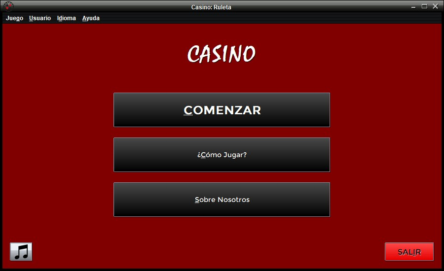
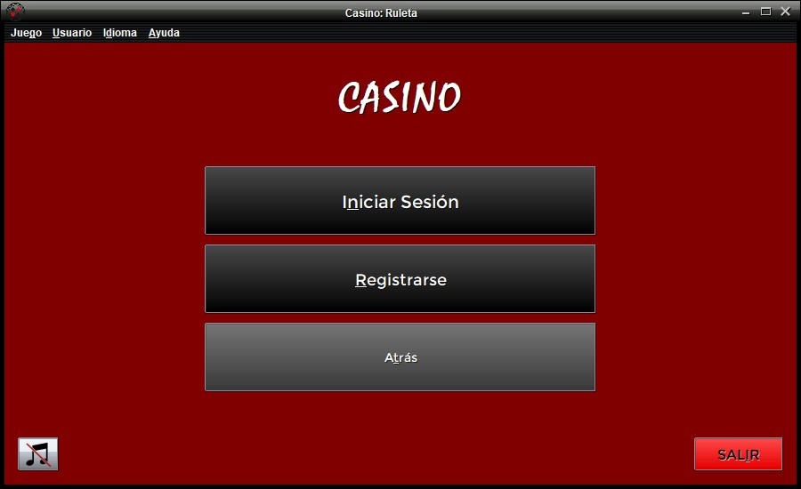
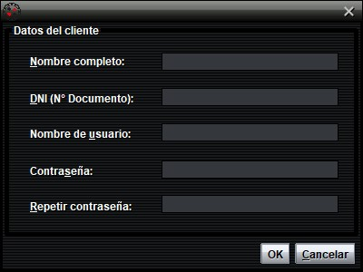
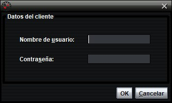

Pantalla inicial
Lo primero que encontrará el usuario en Casino: Ruleta será lo siguiente.

Además de la correspondiente barra de menús, que permite, entre otras opciones,
cambiar el idioma de la aplicación, la pantalla inicial muestra las siguientes opciones:
- COMENZAR: Permite acceder al inicio de sesión y registro del cliente.
- ¿Cómo Jugar?: Muestra ayuda explicativa en línea al usuario sobre la aplicación.
- Sobre Nosotros: Ofrece información útil sobre el autor y las instituciones implicadas.
Junto a estas opciones, se muestra el botón , que permite
activar o desactivar la música del juego respectivamente. Este botón también puede ser accionado con "Alt" + M.
Inicio de sesión y Registro
El usuario deberá pulsar la opción COMENZAR para continuar.
Al hacerlo, se mostrarán a su vez las siguientes opciones al usuario:

- Iniciar Sesión: Permite al cliente acceder con su cuenta ya existente.
- Registrarse: Muestra un formulario para crear una nueva cuenta de usuario.
- Atrás: Vuelve a la pantalla de inicio.
Si es la primera vez que el usuario juega a Casino: Ruleta, seleccionará la opción Registrarse.
Esto mostrará un formulario de registro en el que se pide la introducción de diversos datos personales y de cuenta:

Un nuevo usuario se considera repetido si introduce el apodo ó DNI de otro usuario ya existente.
En cambio, si el cliente ya dispone de una cuenta en Casino: Ruleta, seleccionará la opción Iniciar Sesión.
Se mostrará un formulario más pequeño, que precisa de la introducción de un nombre de usuario y contraseña:

Es indispensable que el cliente introduzca los valores correctos de su cuenta en ambos campos para poder continuar.
Sea cual sea la opción elegida, si los valores introducidos son correctos, se alcanzará la pantalla de juego.
Además, los nuevos usuarios recibirán un saldo inicial de 100.0€ como regalo de la casa.